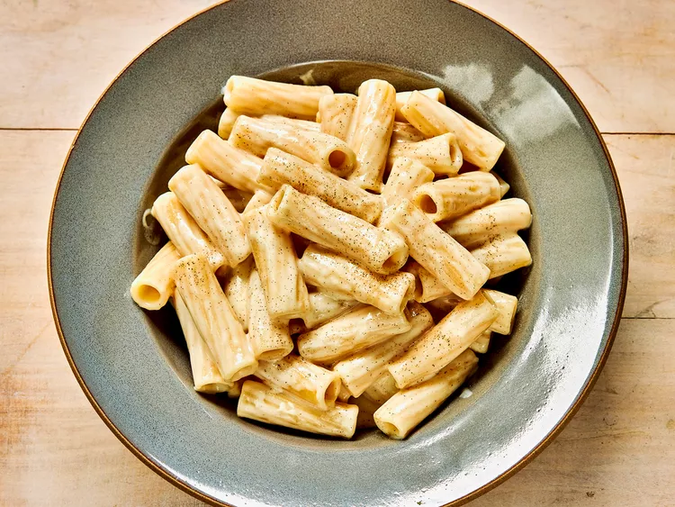
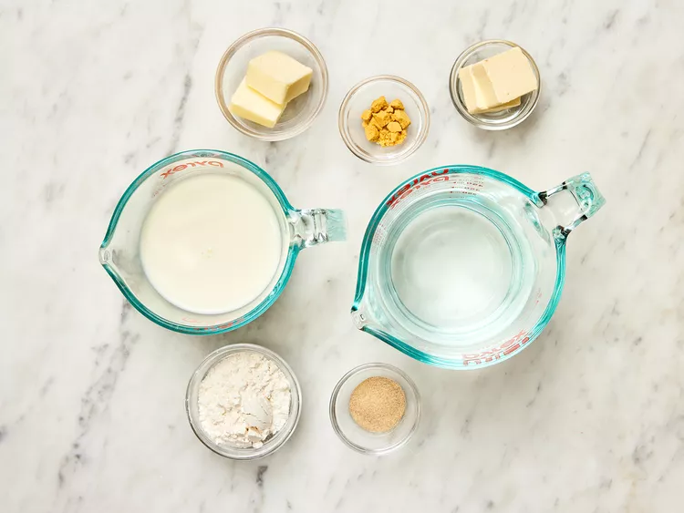
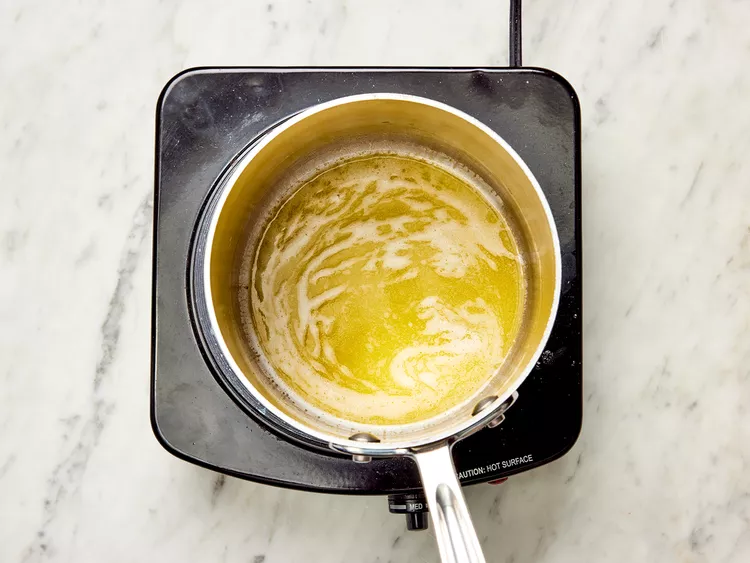
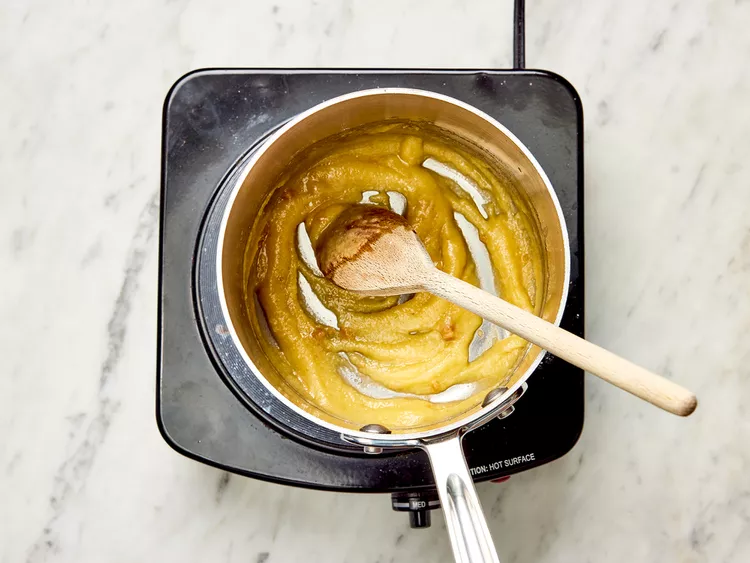
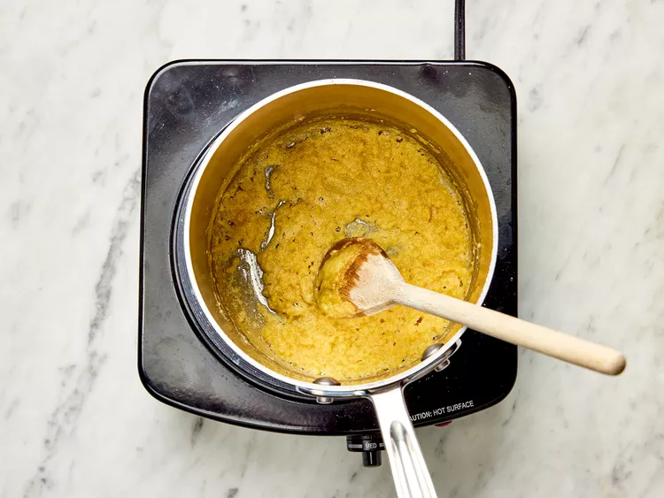
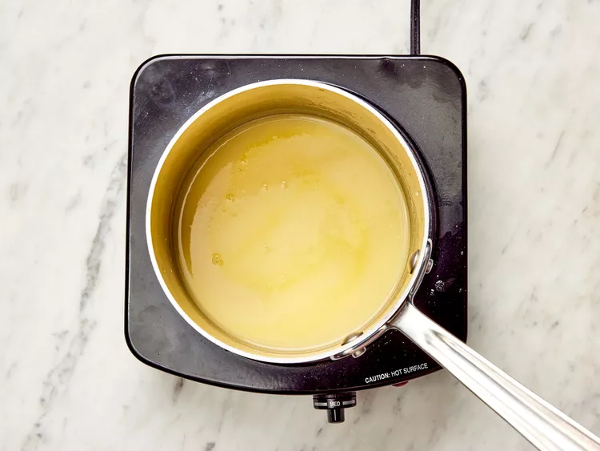
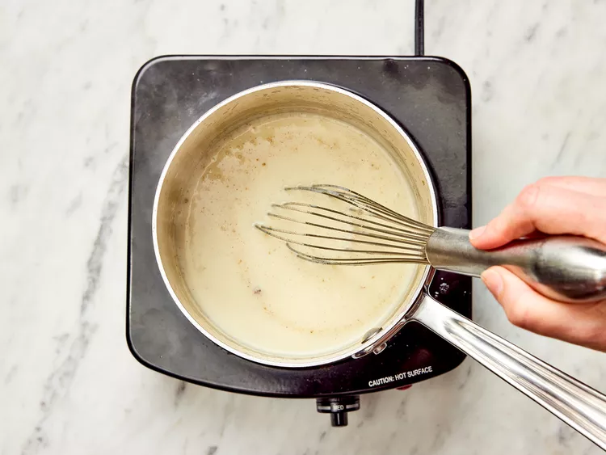

Experiment 4
White Sauce for Pasta

Ingredients
- 2 Tablespoon butter
- 2 tablespoons margarine
- 3 tablespoons all-purpose floor
- 1 cup favourite vegies
- 1 1/2 cups boiling water
- 1 cup 2% milk
- ground white pepper to taste
Directions
- Step 1
- Gather the Indredients.
- 
- Step 2
- Melt butter and margarine in a saucepan over medium-low heat.
- 
- Step 3
- Add flour and stir until well blended, 1 to minutes.
- 
- Step 4
-
Continue to cook and stir until thickend and lightly browned, about 5
minutes..
- 
- Step 5
- Increase the heat to medium and whisk in water until smooth.
- 
- Step 6
-
Stir in milk; cook and stir until hot and thickened, 2 to 3 more
minutes.
- Step 7
- Season with white pepper.
- 